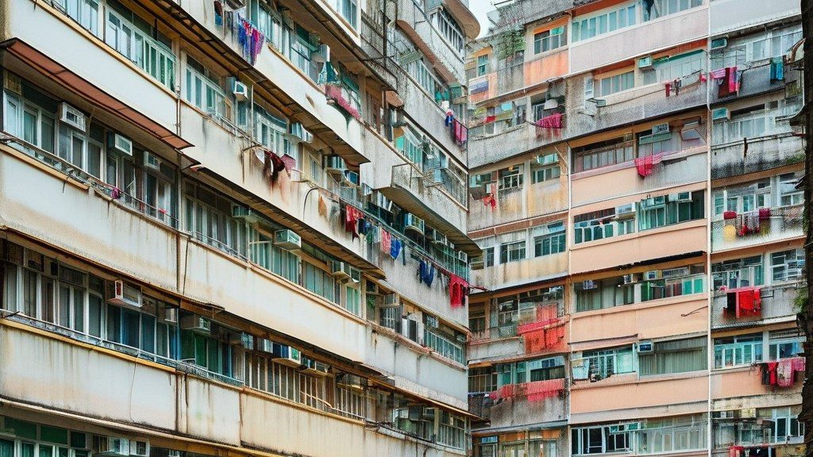
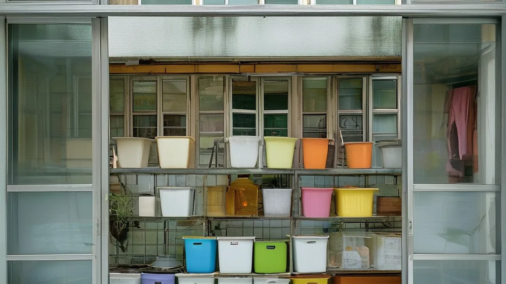
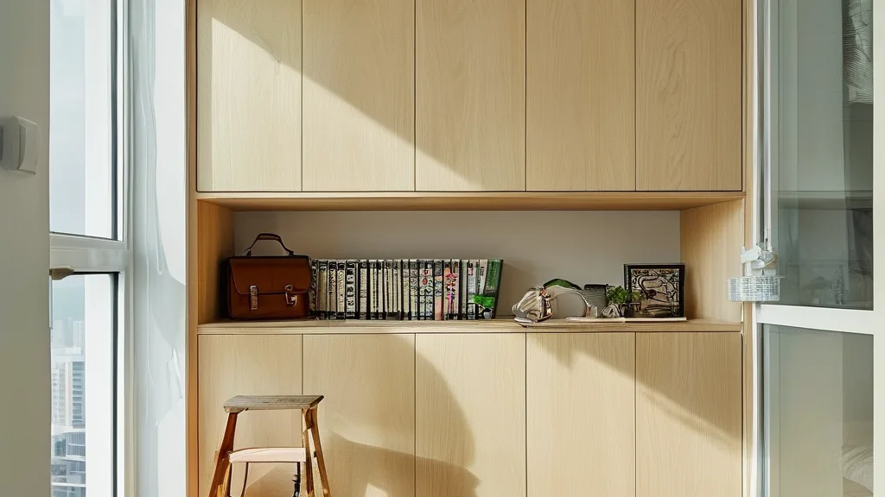
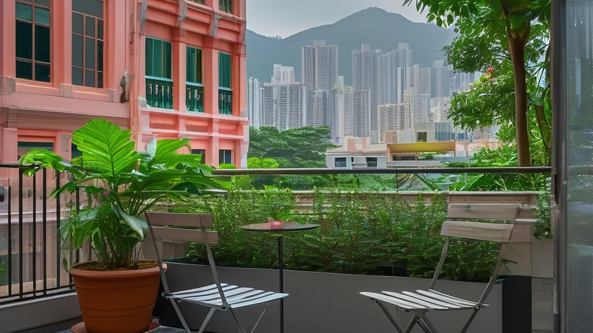

荃灣380呎平台僭建判罰五萬：雄哥講圍封平台嘅代價

📍 場景：荃灣一幢 1981 年落成商住大廈，380 呎兩房連約 120 平方呎平台｜主訪：雄哥（行內人叫法）｜同行：祥叔（觀塘木行三十幾年，做過十二年法團委員）｜記錄：雄哥｜整理：雲蕾｜日期：2026 年 11 月 27 日｜WhatsApp 報價：852 5190 2328
序幕：五萬元，同一個「圍」字
11 月 27 日上午 11 時，政府新聞公報出咗一段幾百字嘅消息：一名業主因為唔遵從屋宇署按《建築物條例》第 24（1）條發出嘅清拆令，10 月 21 日喺西九龍裁判法院被定罪，本週三（11 月 25 日）被判罰款五萬元。
個案內容係咁：荃灣一幢商住大廈，平台同天井上面有一個約 132 平方米嘅搭建物，冇事先得到屋宇署批准同同意。132 平方米，換算大約 1,420 平方呎。呢個數字我翻睇咗兩次。
一般人講「平台加建」，腦海入面係一個玻璃簷篷、一個鐵架儲物籠；但 1,420 平方呎，係一間三房單位嘅面積。呢個已經唔係「圍住晾衫」，係喺平台上面起多一間屋。
「罰五萬，佢圍咗咁多年，抵唔抵？」
「唔止五萬。公報下面仲有兩句：最高罰款 20 萬元、監禁一年，罪行持續每日另罰 2 萬元；政府仲建議修訂條例再提高罰則。呢五萬，只係第一張單。」
第一幕：荃灣 380 呎連平台，陸生想「升級」
11 月 27 日下午，我去荃灣一幢 1981 年落成嘅商住大廈。380 呎兩房，連一個約 120 平方呎平台。業主陸生 2019 年買入，上手業主十年前已經用鋁窗同鐵架圍封平台，入面做洗衣位加儲物。
我上到平台，唔係先睇佢塊玻璃，係睇三樣：平台同隔籬單位嘅分界、天井位、外牆原有嘅通風開口。三樣都對唔上——鋁框直接壓住外牆通風磚，天井上面加咗一塊鋁板，分界牆拆剩半幅。
「雄哥，上手做咗十幾年，管理處年年巡樓都冇出聲，我點會知有問題？我想換埋新玻璃，一次過搞好啲。」
「冇人出聲，唔等於合法。你接手嘅唔止一個平台，你接手咗一張未找嘅數。今日再換新料、再加天花，等於喺呢張數上面加多一筆。」
祥叔蹲低睇個鋁框底部，用手指撥開膠邊：「呢個框冇做企水，雨水沿框腳入牆，你塊地磚翻起就見到。」
「我做委員嗰十二年，平台投訴年年有。最麻煩唔係個平台，係一幢樓幾十個平台，個個都話自己嗰個『做咗好多年』。」

第二幕：圖則、天井、程序，三樣對唔上就係僭建
好多業主以為「平台係我專用，我圍起就係我嘅」。呢句要拆開兩半講。
第一，睇批准圖則。屋宇署存檔嘅批准建築圖則，上面有冇呢個構築物？冇，就係僭建。呢份圖則業主自己可以向屋宇署查，唔使靠經紀或者上手業主口頭講。
第二，睇公契同地契。平台可能寫明「私人專用」，但「專用」講嘅係使用權，唔係加建權。加建照樣受《建築物條例》管。
第三，睇有冇佔用天井、走火通道、通風採光。天井喺舊樓好多時係唯一嘅天然通風同緊急逃生路徑，一封就係封死全幢樓嘅後路，所以屋宇署對天井圍封一向手緊。
有人會問：咁「小型工程」呢？2010 年引入嘅小型工程監管制度，將 187 項工程分三級，容許業主唔使事先入則，用簡化程序做。但呢個制度唔係免死金牌：工程要由註冊小型工程承建商做、按級別呈報；唔在名單入面嘅，一樣要入則審批。
「咁我搵個師傅幫我圍返好啲，得唔得？我唔想拆。」
「你要問嘅唔係邊個師傅手工好，係呢個構築物有冇圖則、有冇佔天井。冇圖則嘅嘢，手工幾好都係僭建；有啲人仲會照做，因為佢收錢，張清拆令係寄去你屋企。」
我見過一個實例：舊年土瓜灣一個平台玻璃屋，颱風之後鋁框變形、兩塊玻璃裂。原因唔係手工，係固定方式——只有幾粒膨脹螺絲打落一幅後加磚牆，冇人計過風荷載。呢種工程冇圖則、冇人簽名，出事之後連追邊個都追唔到。
第三幕：對業主同師傅，分別意味啲乜
對業主：清拆令唔係罰錢了事。唔遵從清拆令本身係罪行，最高罰款 20 萬元、監禁一年，罪行持續每日另罰 2 萬元。另外，條例亦賦予屋宇署權力代為清拆，再向業主追討工程費同監督費——即係話，你可以唔拆，但最後拆嘅錢由你俾。
仲有一條數，賣樓嗰日才出現：有僭建、有清拆令嘅單位，銀行估價同按揭會撞，律師查契一定見到。買家可以要求扣錢，你嘅成交期由「三個月」變成「唔知幾時」。
對師傅：接單前三問。有冇批准圖則副本？平台屬私人專用定公用部分？有冇管理處或法團嘅書面同意？三樣答唔出，呢單唔好開。註冊承建商做未經批准嘅工程，除咗被檢控，仲會被紀律處分，嚴重要除名——冇咗個牌，以後所有工程都接唔到。
咁唔圍平台，仲有咩可以做？我同陸生講咗三條路，全部唔使入則：平台地台重做防水，鋪戶外級防滑磚；儲物搬入室內，做訂造離地櫃，櫃底留 100 毫米方便抹地散水氣；平台上面用可移動傢俬同鋁百葉遮陽，唔固定、唔圍封，落雨收返入屋。
「拆咗個平台，我啲洗衣機、單車、雜物擺邊？本來多一間房幾好用。」
「所以先做室內櫃。平台唔係唔可以用，係唔可以封。封死佢，你多一間房，但冇圖則、日日等信、賣樓要解釋；留住個平台做生活位，你反而多一個空間。」
陸生最後嘅清單係咁：
項目一：平台舊鋁窗及鐵架清拆、廢料清運 $6,800
項目二：平台地台防水重做（約 11 平方米，兩度 PU） $9,400
項目三：室內訂造離地儲物櫃兩組 $12,300
項目四：廳房牆身修補及油漆 $4,200
項目五：運輸、安裝及完工清潔 $2,300
合計（故事報價） $35,000
以上係故事報價，實際以度尺為準。

尾聲：平台係借返嚟嘅，唔係送俾你嘅
陸生最後冇換新鋁窗。佢拆走圍封，平台清空，鋪磚、做防水，加一組可移動櫃同兩張摺椅；洗衣機搬入廚房位。工程做完，佢個平台第一次有陽光入到廳。
佢問我：「咁我係唔係蝕咗？本來多一間房。」我話：你本來嗰間房，係借返嚟嘅。11 月 25 日嗰五萬蚊罰款，就係有人借到要還為止。
呢件事同我以前寫過嘅個案係同一條線：深水埗鄧生講法團係「邊個有權簽名」，土瓜灣麥太收到張紙就簽係「張紙係真定假」，深水埗蔡太天花滲水係「源頭未清唔好封板」。三篇講嘅都係一件事：業主要知道自己手上嘅係咩權利。
雄哥講句老實話：平台係跟公契借返嚟嘅空間，唔係送俾你嘅面積。你圍得埋，唔等於你擁有佢。

❓ 平台僭建三問
Q1：平台圍封，係唔係一定要入則？
要視乎構築物同工程範圍。若圍封唔在《建築物（小型工程）規例》附表 1 嘅 187 項之內，就要先入則取得屋宇署批准；即使在名單之內，仍須由註冊小型工程承建商按級別施工同呈報。最實際嘅做法係先向屋宇署查閱單位嘅批准圖則，睇清楚平台上有冇已批准嘅構築物。
Q2：收到清拆令可以點做？
先睇令上嘅限期同範圍，唔好當普通信件處理。可以委聘認可人士或註冊結構工程師評估，亦可向屋宇署查詢可行方案；但唔遵從清拆令本身係罪行，最高罰款 20 萬元同監禁一年，持續每日另罰 2 萬元，署方亦可代為清拆再追討費用。有疑問就盡早書面回覆署方。
Q3：買樓見到平台有玻璃屋，應該查咩？
三樣：批准建築圖則（向屋宇署查）、公契同地契嘅平台使用條款、單位有冇未遵辦嘅清拆令或警告信。最好喺簽臨時買賣合約之前查清楚，並要求賣方書面確認冇僭建。查契係律師工作，但業主自己都可以去問，唔好淨係信一句「上手做咗好多年」。
本文配圖均為 AI 場景示意圖，僅供場景參考，並非真實工地照片或業主影像。
你個平台都有圍封？影張相，問清楚先。
📱 一鍵 WhatsApp 雄哥